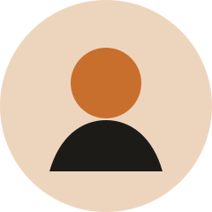
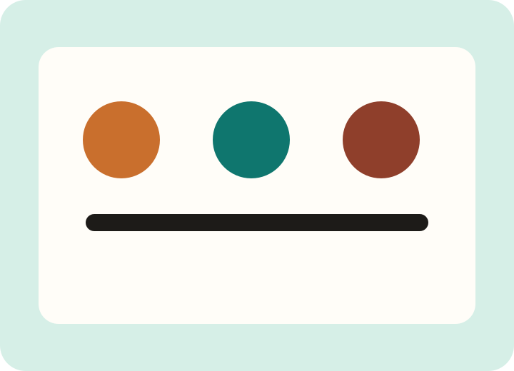

Franck N.
CEO & Cofondatrice
AfriTalent a été pensée par une équipe convaincue que l'Afrique dispose déjà des talents capables de construire les produits de demain. Notre mission : rendre ces talents plus visibles, plus crédibles et plus accessibles aux entreprises du continent et d'ailleurs.
Nous croyons à une mise en relation qui valorise la qualité du travail, la confiance, la communication et la croissance professionnelle durable.

Des outils simples pour accélérer la collaboration sans friction.
Une expérience inclusive, claire et utilisable sur tous les écrans.
Nous faisons grandir un réseau de talents et d'entreprises qui se font confiance.
La qualité du travail et la fiabilité sont valorisées à chaque étape.
pays représentés dans la communauté
% de clients renouvellent une collaboration après une première mission
briefs publiés chaque mois
communautés locales et hubs partenaires accompagnent l'écosystème AfriTalent